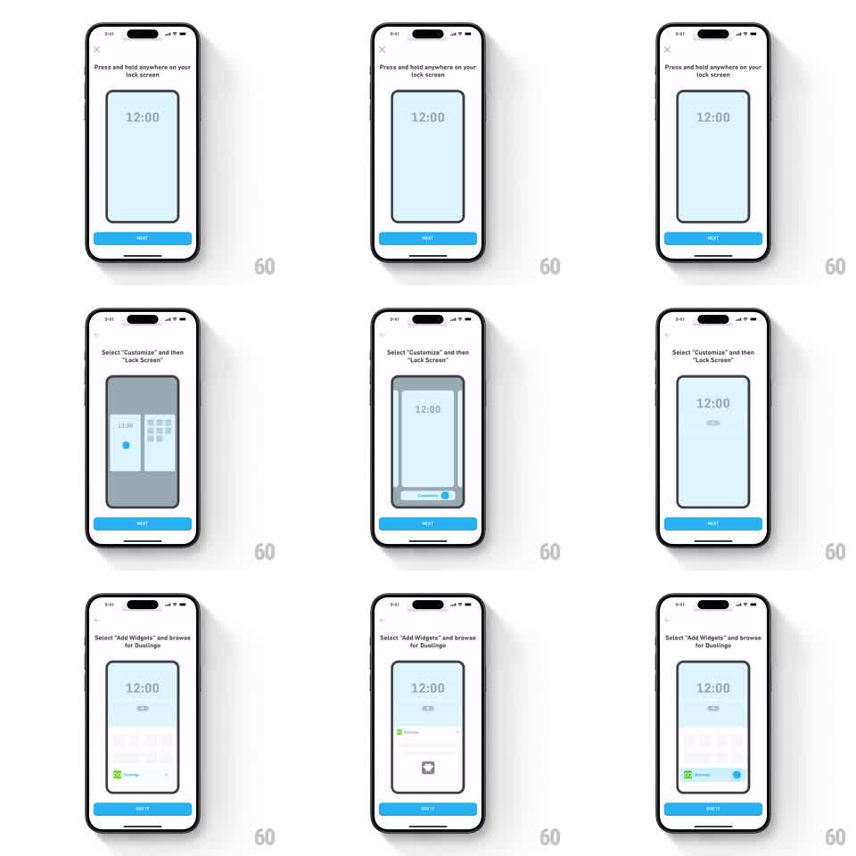

Media
Frame-by-frame

Rebuild this animation 1:1: Duolingo's lock-screen-widget tutorial - a three-step onboarding sequence on white where a mock iPhone lock screen demonstrates each gesture (press-and-hold, customize picker, widget gallery) with the exact finger affordances, under step captions and a blue NEXT button.

Rebuild this animation 1:1: Duolingo's lock-screen-widget tutorial - a three-step onboarding sequence on white where a mock iPhone lock screen demonstrates each gesture (press-and-hold, customize picker, widget gallery) with the exact finger affordances, under step captions and a blue NEXT button.
## Integration
Integration: stack-agnostic spec - springs given as stiffness/damping, timed motions as duration + curve; map every value to your framework and animation library of choice.
## Scene
White onboarding screens, close X top-left, bold sentence-case caption under the notch ("Press and hold anywhere on your lock screen", "Select 'Customize' and then 'Lock Screen'", "Select 'Add Widgets' and browse for Duolingo"), a blue NEXT button at the bottom (GOT IT on the last step). Center stage: a rounded mock lock screen showing 12:00 on a pale blue wallpaper.
## Motion spec
Pattern: step-by-step gesture tutorial with looping demos.
- Step 1: a touch indicator dot presses the mock lock screen; the wallpaper dims and the clock view enters jiggle/edit mode (scale 0.96, subtle 1deg rotation wobble, 500ms loop) after a 600ms hold.
- Step 2: the mock zooms out into the wallpaper gallery (two panels, 300ms ease-out), the CUSTOMIZE pill rises below the selected wallpaper and a blue dot taps it (dot scale 1.0 -> 0.8 -> 1.0, 200ms).
- Step 3: the widget gallery sheet slides up inside the mock (300ms), scrolls slightly, and the Duolingo widget row highlights with a blue selection outline (150ms); a blue dot taps it.
- Step transitions: caption and mock crossfade (200ms) on NEXT; NEXT button press scales 0.95 (100ms).
- Each demo loops with a ~800ms pause at the end state.
## Calibration
- The touch dot is the teacher - hold, release, and tap timings must read as deliberate finger actions, not random pulses.
- Captions swap exactly with their demo; never show step 2 visuals under step 1 text.
## Reduced motion
Each step shows its end state statically; step transitions crossfade over 150ms; no jiggle or press loops.
## Don't miss
- The mock lock screen keeps 12:00 and the pale wallpaper across steps for continuity.
- The last step ends inside the widget gallery with the Duolingo widget selected, not back on the lock screen.